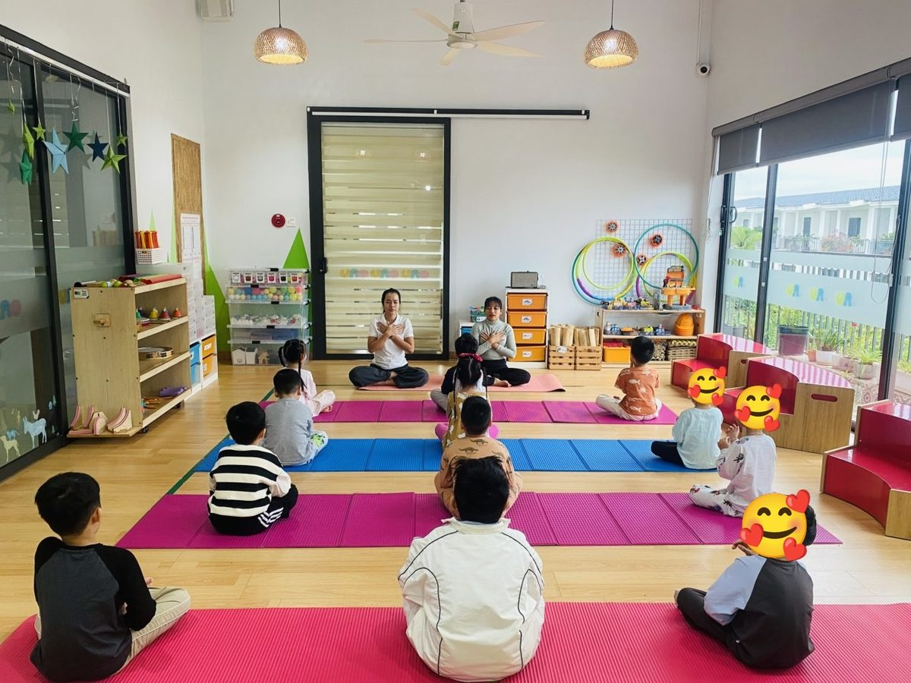
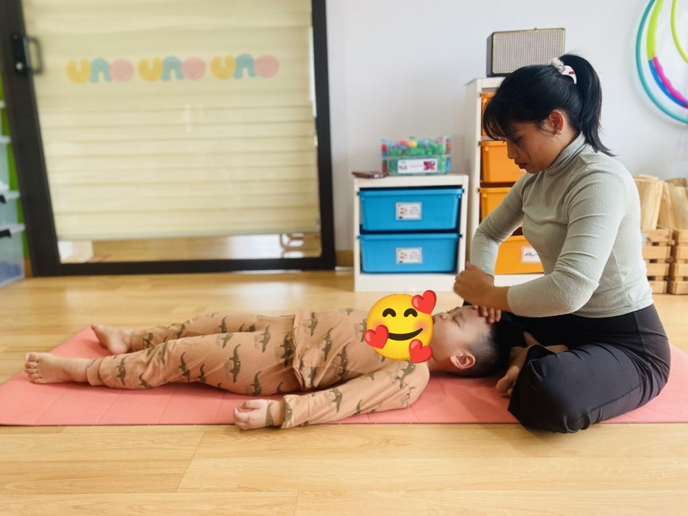
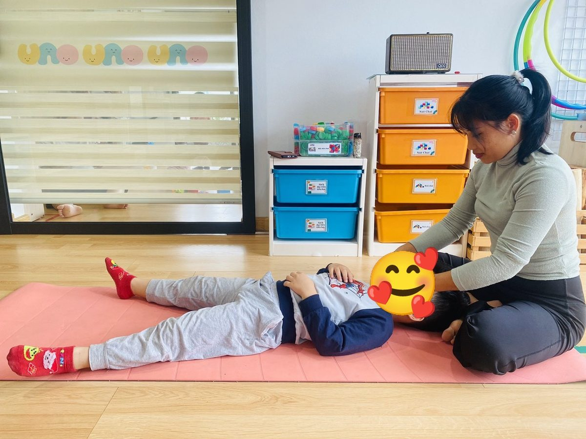
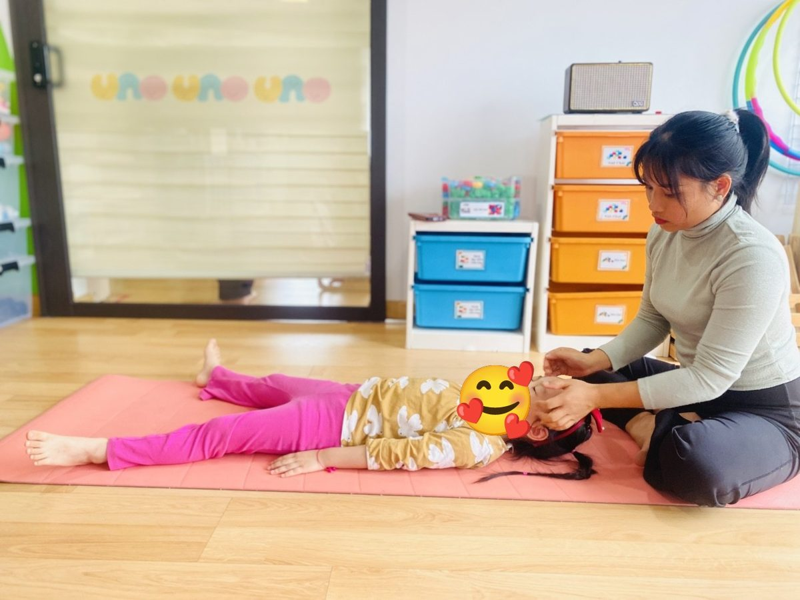
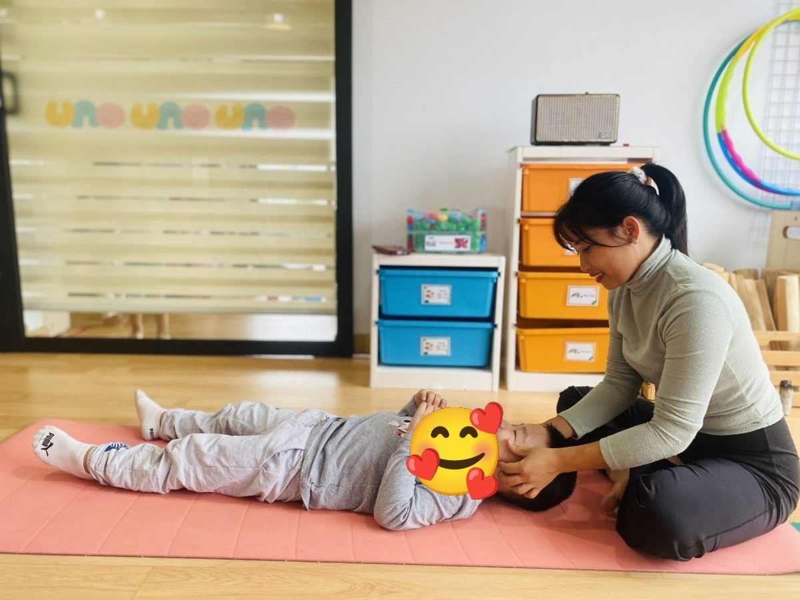
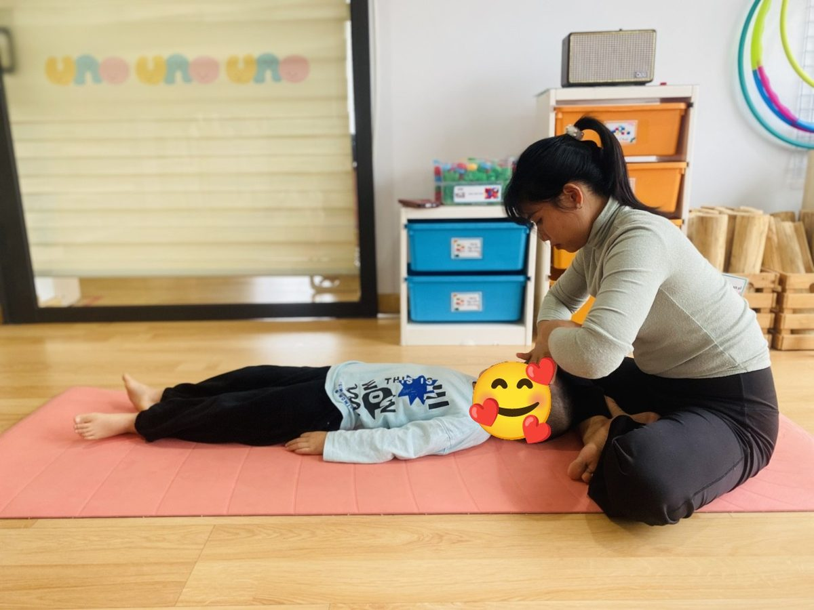
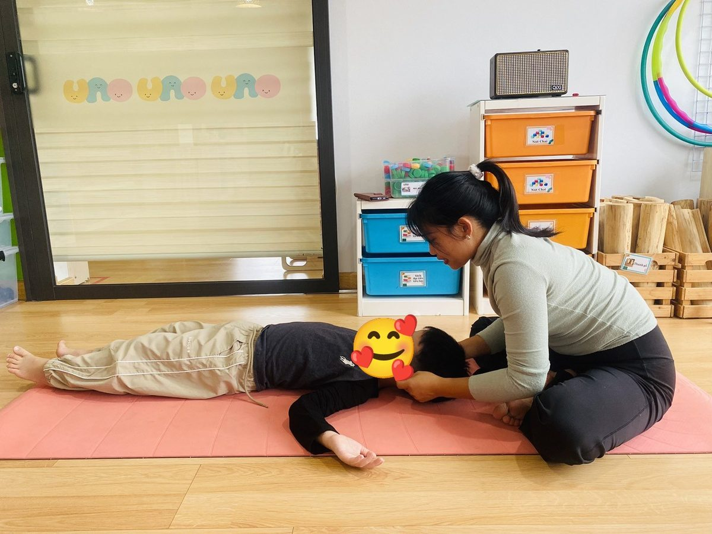
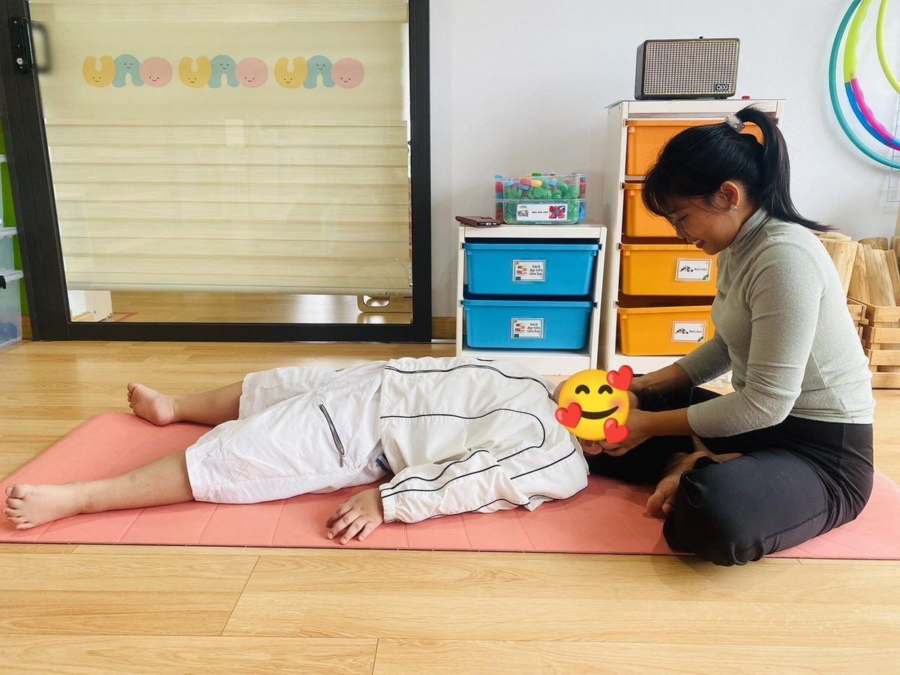

Yoga trẻ em · Chánh niệm
Yoga massage trẻ em: 15 phút cô gửi yêu thương qua đôi tay

Cả lớp ngồi trên thảm. Hai tay đặt chéo lên ngực. Cô hỏi nhỏ: “Các con nghe thử xem, trái tim mình đang đập thế nào?”
Có bạn nhắm tít mắt. Có bạn hé một mắt nhìn cô, cười. Cô cũng cười.
Hôm ấy là một tiết đặc biệt. Cô dành hẳn 15 phút chỉ để ở bên từng con, bằng đôi tay.
Vì sao có những tiết cô dành hẳn 15 phút?
Buổi Yoga nào của cô cũng có vài phút massage cuối buổi. Cô đã kể trong bài 10 phút massage cuối buổi Yoga. Lúc ấy thường có các cô giáo cùng massage, để bạn nào cũng được một, hai phút.
Nhưng có những tiết, cô muốn chậm hơn nữa. Phần massage dài ra, thành 15 phút. Cô gọi đó là những tiết kết nối.
Lý do giản dị thôi. Trẻ con lớn lên nhờ ăn, nhờ ngủ, nhờ chơi. Và nhờ được chạm vào. Một cái xoa đầu. Một bàn tay ấm đặt lên trán. Những điều nhỏ như thế, cô thấy các con cần nhiều hơn người lớn mình vẫn nghĩ.
Đôi tay cô làm gì trong 15 phút ấy
Các con nằm ngửa trên thảm, tay chân thả lỏng. Cô bật nhạc thật nhẹ. Rồi cô đến với từng bạn, ngồi phía đầu con.
Cô vuốt ve vầng trán, đôi lông mày, hai bên má. Xoa tròn thái dương, day khẽ dái tai, ôm cái đầu nhỏ trong hai lòng bàn tay. Hôm nào còn thời gian, cô nắn nhẹ hai bờ vai, xoa dọc cánh tay, bóp khẽ từng ngón tay bé xíu.
Lực rất nhẹ. Không ấn, không bẻ. Chỉ đủ để con biết: có cô ở đây.
Có bạn nằm yên ngay. Có bạn cười khúc khích, cựa quậy một lúc mới chịu nhắm mắt. Cô không vội. Bạn nào cũng có lượt của mình.
Vừa massage, cô vừa cầu nguyện
Phần này cô ít khi kể. Vì trong ảnh không nhìn thấy được.
Khi tay cô đặt lên trán một bạn nhỏ, cô thở chậm lại. Trong lòng, cô thầm nói với con:
Con khỏe mạnh.
Con bình an.
Con được yêu thương.
Mong vũ trụ che chở con, để con lớn lên thành một cô bé, cậu bé khỏe mạnh. Khỏe cả thân thể, và bình an cả trong tâm hồn.
Cô không nói thành tiếng. Các con không nghe thấy. Nhưng cô tin con cảm được. Trẻ con nhạy lắm. Bàn tay người lớn đang vội hay đang thương, con biết ngay.
Với cô, đó là tác ý. Mỗi cái chạm mang theo một lời chúc. Lúc ấy massage không chỉ để cơ thể thư giãn. Cô muốn gửi vào con một chút năng lượng yêu thương, để con mang về nhà, mang theo những ngày lớn lên.
Lời chúc ấy đi xa đến đâu, cô không biết. Cô chỉ biết mình chúc thật lòng.
Xem cô massage cho các con
Đây là video cô quay ở một tiết kết nối. Nhạc nhẹ, lớp yên, cô đến với từng bạn. Bố mẹ và thầy cô xem để thấy đôi tay cô chậm đến mức nào.
Từng cái chạm, từng lời chúc
Ảnh thật từ một tiết kết nối của cô Sophia. Khuôn mặt các bé được che để bảo vệ các con.
-

1Bàn tay đặt yên trên trán
🌿 Bắt đầu
Đôi tay: Cô đặt một lòng bàn tay lên trán con. Chưa xoa vội. Tay nằm yên qua ba hơi thở, để con quen với hơi ấm của cô.
Lời cô thầm gửi: “Con bình an.”
-

2Vuốt nhẹ vầng trán
🌿 Mây trôi
Đôi tay: Đầu ngón tay đi từ giữa trán xuống sống mũi, rồi vuốt ra hai bên. Chậm, theo nhịp thở ra của con. Bạn nhỏ này đặt tay lên bụng, nằm nghe.
Lời cô thầm gửi: “Những lo lắng nhỏ, con thả ra nhé.”
-

3Xoa tròn thái dương
🌿 Bánh xe quay chậm
Đôi tay: Đầu ngón tay xoa những vòng tròn thật nhỏ ở hai bên thái dương. Bạn nhỏ nằm dang tay chân như ngôi sao, thả lỏng từ đầu tới chân.
Lời cô thầm gửi: “Đầu óc con nhẹ nhõm, trong trẻo.”
-

4Ôm lấy đôi má
🌿 Bông hoa nở
Đôi tay: Hai lòng bàn tay áp hai bên má con, giữ yên vài hơi thở. Cô không bóp, không ấn. Chỉ để con thấy ấm.
Lời cô thầm gửi: “Con được yêu thương. Nhiều lắm.”
-

5Vuốt má xuống cằm
🌿 Giọt nắng
Đôi tay: Hai bàn tay vuốt từ gò má xuống cằm, nhẹ như lau một giọt nước. Vài lượt rồi dừng.
Lời cô thầm gửi: “Con vui. Con yêu đời.”
-

6Nâng đỡ cái đầu nhỏ
🌿 Gối mây
Đôi tay: Tay cô luồn xuống, ôm phía sau đầu và hai bên tai con. Con thả sức nặng của đầu vào tay cô. Cô không kéo, không xoay cổ.
Lời cô thầm gửi: “Có cô ở đây. Con được che chở.”
-

7Day khẽ dái tai
🌿 Chuông gió
Đôi tay: Ngón cái và ngón trỏ day tròn dái tai rồi kéo thật khẽ xuống. Động tác này hay làm các con khúc khích. Cười xong, con lại nằm yên.
Lời cô thầm gửi: “Con lắng nghe những điều tốt lành.”
Cô thấy gì ở các con
Cô không dám nói massage chữa được bệnh gì. Cô chỉ kể những điều cô thấy ở lớp mình.
- Lớp lặng dần. Lúc đầu còn tiếng cười, tiếng thì thầm. Một lúc sau, cả phòng chỉ còn tiếng nhạc và tiếng thở.
- Các con mềm ra. Vai thả xuống, bàn tay thôi nắm chặt. Có bạn ngủ thiếp đi lúc nào không hay.
- Các con gần cô hơn. Có bạn cả buổi còn rụt rè. Đến lượt massage, con mở mắt nhìn cô, cười.
- Các con biết chờ. Ai cũng có lượt. Nên bạn hiếu động nhất lớp cũng chịu nằm yên chờ cô.
Bình an thì cô không đo được. Nhưng cô thấy nó, lúc các con từ từ ngồi dậy, chắp tay cảm ơn, mắt còn lim dim.
Ở nhà, bố mẹ cũng làm được
Không cần học bài bản. Tối trước khi ngủ, bố mẹ ngồi cạnh con, đặt tay lên trán con, thở chậm cùng con. Xoa đầu, xoa lưng, nắn nhẹ bàn chân. Mười lăm phút. Ít hơn cũng được.
Và nếu muốn, thầm chúc con một điều. Không cần nói thành lời. Chỉ cần thật lòng.
Vài điều cô luôn giữ
- Hỏi con trước. “Cô xoa đầu cho con nhé?” Con lắc đầu thì cô chỉ ngồi cạnh. Lần sau cô lại hỏi.
- Tay sạch, tay ấm, móng cắt ngắn. Mùa lạnh cô xoa tay thật lâu trước khi chạm vào con.
- Lực nhẹ như chạm cánh hoa. Không ấn mạnh, không bẻ, không xoay cổ bé.
- Không dùng dầu hay kem ở vùng mặt, nhất là gần mắt.
- Bé ốm, sốt, có vết thương hay mẩn ngứa thì cô để con nằm nghỉ, không massage.
- Lòng yên rồi mới chạm. Hôm nào cô còn bộn bề, cô ngồi thở vài hơi trước đã.
Điều cô nhận lại
Có hôm cô đến lớp mà lòng nặng trĩu. Rồi đến bạn thứ ba, thứ tư, cô thấy tay mình nhẹ đi. Lời chúc cô gửi cho con, hình như cũng quay về với cô.
Cho đi. Rồi được nhận lại.
Các con sẽ quên nhiều tư thế. Cô biết. Nhưng cô mong, mai này lớn lên, có lúc nào đó con mệt, con sẽ nhớ mang máng có một bàn tay từng đặt lên trán mình, rất nhẹ, và chúc mình bình an.
🌿 Thầy cô muốn mang những phút này về lớp mình?
Cách đặt tay, cách hỏi con trước khi chạm, cách thở cùng con và giữ lòng yên khi massage… cô hướng dẫn trong khóa Đào tạo Huấn luyện viên Yoga trẻ em, cùng cả buổi học trọn vẹn từ lúc chào nhau đến lúc nằm thư giãn.
Bố mẹ muốn con được học ở lớp của cô thì nhắn cô hỏi lịch nhé.